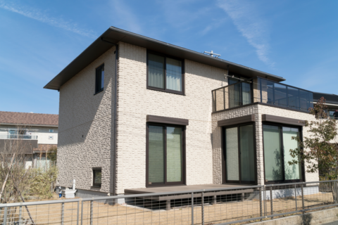

腕を磨いて、職人になる。
「自分の技術力があってこその完工があると、やっぱり楽しいし、自信につながる。」——代表 小椋 智
- 未経験歓迎・見習い3か月から
- 見習い後 日給10,000円〜
- 8:00〜17:00・日曜休み
神奈川県綾瀬市で、宅地造成・外構・エクステリア工事をしています。
来てほしいのは、本気でこの仕事をやりたい人。
この仕事を好きになってくれる人。
経験は問いません。一から、職人に育てます。
求人情報
現場工事スタッフ募集中！

未経験から職人へ
見習い3か月から、一歩ずつ自分の腕で、現場を仕上げる
最初は見習いから。現場の流れと基本の作業を覚え、できることを少しずつ増やしていきます。独り立ちして、いずれは現場を任される職人へ。
業界歴20年を超える代表がそばについて教えます。わからないことは、わからないままにせず一緒に覚えていきましょう。
- 代表の業界歴
- 20年以上
- 見習い期間
- 3か月
- 見習い後 日給
- 1万円〜
- 定休日
- 日曜日


代表メッセージ
「本気でこの仕事をやりたい人に来てほしい」この仕事を好きになれる人へ
技術や経験よりも、まずは気持ち。この仕事を好きになって、本気で取り組んでくれる人と一緒に働きたいと考えています。
目指すのは、7〜8名で3つの現場を動かせる会社。一緒に会社をつくっていく仲間を探しています。
代表メッセージMESSAGE施工実績
自分がつくるもの外構・ブロック工事の現場

働き方・待遇
頑張るときと、ゆるく楽しくやるときメリハリをつけて働く
就業時間は8:00〜17:00（休憩1時間30分）。休日は日曜日・年末年始・お盆・GWです（現場によって変更あり）。
給与は日給制。見習い期間（3か月）は日給9,000円、見習い期間終了後は日給10,000円〜。頑張りを評価して給与に反映します。
- 8:00 START
- BREAK 1.5h
- 17:00 FINISH
よくある質問
応募前の疑問に、先にお答えします
未経験でも応募できますか？
はい。経験の有無は問いません。入社後は一から丁寧にお教えします。
普通自動車免許は必要ですか？
あれば尚可です。MT免許をお持ちの方は優遇します。
応募の前に見学や相談はできますか？
ご希望の方はお問い合わせフォームまたはお電話でご相談ください。
工事のご依頼
宅地造成・外構・エクステリア工事「頼んで良かった」と思える施工を
神奈川県綾瀬市を拠点に、県内全域からご依頼を承っています。ブロック工事・擁壁工事・土工事・排水工事にも対応。ご相談・お見積もりは無料です。
業務案内を見るWORKブログ

まずは現場を見に来ませんか
一葉で働いてみたい方へ
応募の前に、話を聞くだけでも大丈夫です。
TEL 0467-39-5577（8:00〜17:00・日曜定休）
工事のご依頼の方へ
お問い合わせフォーム、またはお電話で承ります。
〒252-1124 神奈川県綾瀬市吉岡229-6